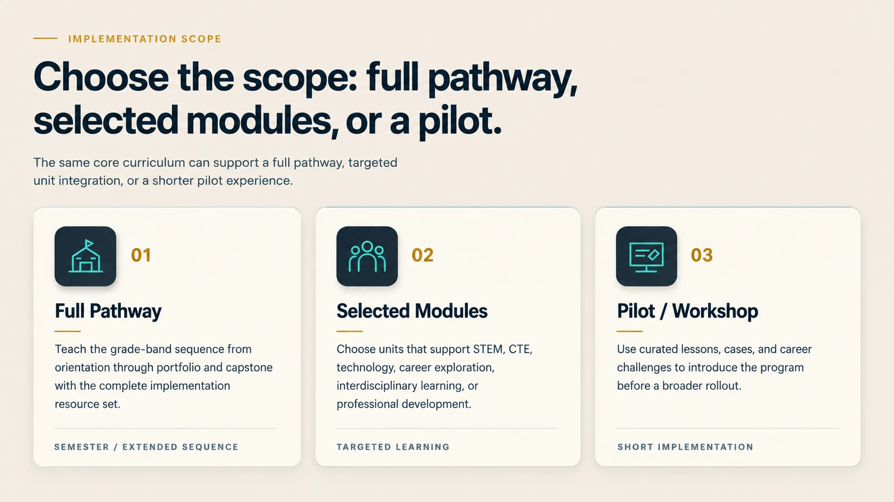
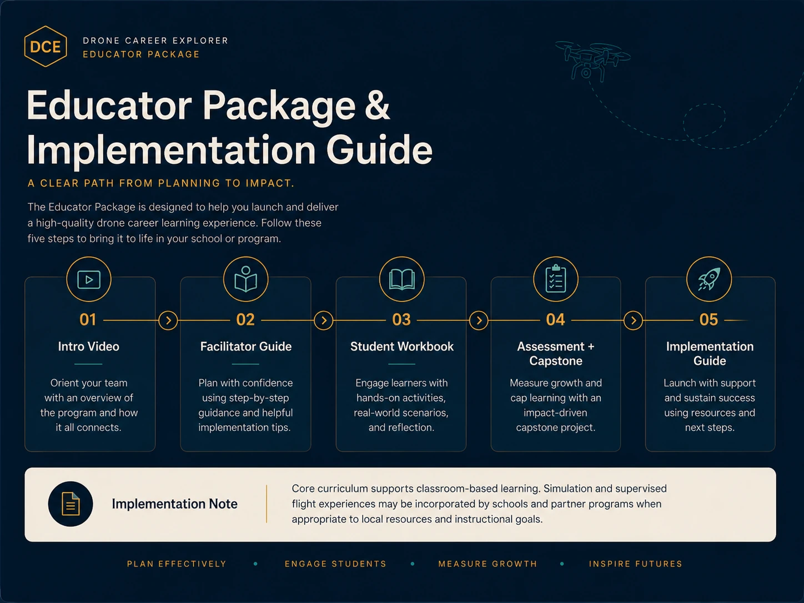

Pathway Certificate of Completion
Recognition is tied to defined unit completion and required portfolio/capstone evidence.
Choose a full Grades 6–12 pathway, selected modules, or a focused pilot. Implementation can combine classroom learning, simulator-based experiences, and supervised flight activities based on school resources, policies, partnerships, and instructional goals.
Middle School • High School • Professional Readiness
The same core curriculum can support a full pathway, targeted unit integration, or a shorter pilot experience.

Student pathways can culminate in a program-issued certificate of completion tied to portfolio or capstone evidence. Educators can earn a Drone Career Explorer microcredential through professional learning and implementation evidence.
Recognition is tied to defined unit completion and required portfolio/capstone evidence.
Professional learning plus planning and implementation evidence demonstrates facilitator readiness.
Grades 6–12 career-connected technology learning, student portfolios, capstones, and educator implementation resources.
Modular career exploration, systems thinking, responsible technology, and future-workforce experiences.
Advanced-operations readiness, current regulatory context, proposed BVLOS standards, organizational learning, compliance reasoning, and professional portfolio development.

Simulation and supervised flight experiences may be incorporated by schools and partner programs when appropriate to local resources, policies, partnerships, and instructional goals.
Educator package What participating educators receive. 01 Intro Video Orient → 02 Facilitator Guide Plan → 03 Student Workbook Engage → 04 Assessment + Capstone Assess → 05 Implementation Guide Launch IMPLEMENTATION NOTE Core curriculum supports classroom-based learning. Simulation and supervised flight experiences may be incorporated by schools and partner programs when appropriate to local resources, policies, and instructional goals.
Implementation conversations are organized around four practical details: grade band, learning setting, timeline, and program scope. Public resources provide an overview before a school or partner conversation.
Drone Career Explorer sits between K–12 AI learning and the professional UAS workforce. These connected destinations help educators, learners, and partners explore the part of the ecosystem that fits their goals.
Maison Glamour et Grace connects emerging drone technology with the people, processes, and operating environments needed to use it responsibly. Its role in the Drone Career Explorer ecosystem is to connect education with developing professional UAS applications, workforce preparation, and advanced-operations awareness.
Aerial media, site documentation, operational support, and related UAS applications as capabilities are developed and deployed.
Training, onboarding, role preparation, job aids, and learning experiences that help people work confidently around emerging UAS operations.
Safety communication, workflow planning, compliance awareness, and organizational preparation for more advanced drone operations.
These public programs may help schools connect drone learning to aviation awareness, youth-program networks, and postsecondary pathways. Listing does not imply endorsement or formal partnership.
For leaders, coaches, and faculty working with youth ages 11–18 in drone programs or programs being developed.
Learn more ↗Postsecondary institutions recognized for preparing learners for UAS careers and engaging workforce stakeholders.
Explore UAS-CTI ↗Aviation career, safety, weather, airspace, and educator resources that can complement drone instruction.
Explore Smart Skies ↗